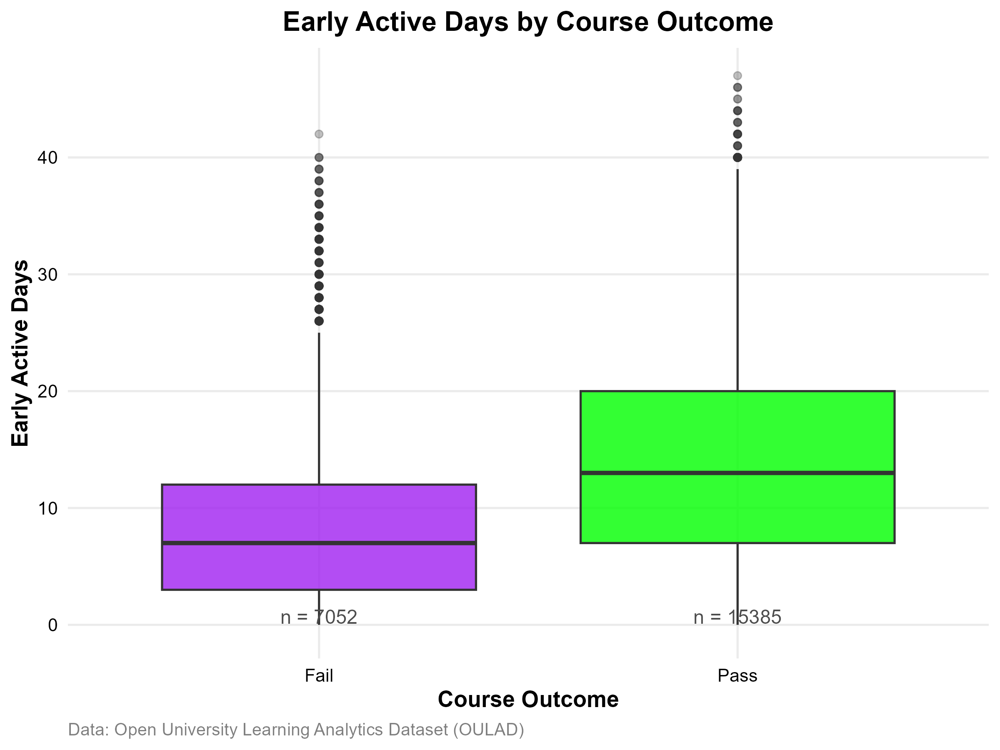
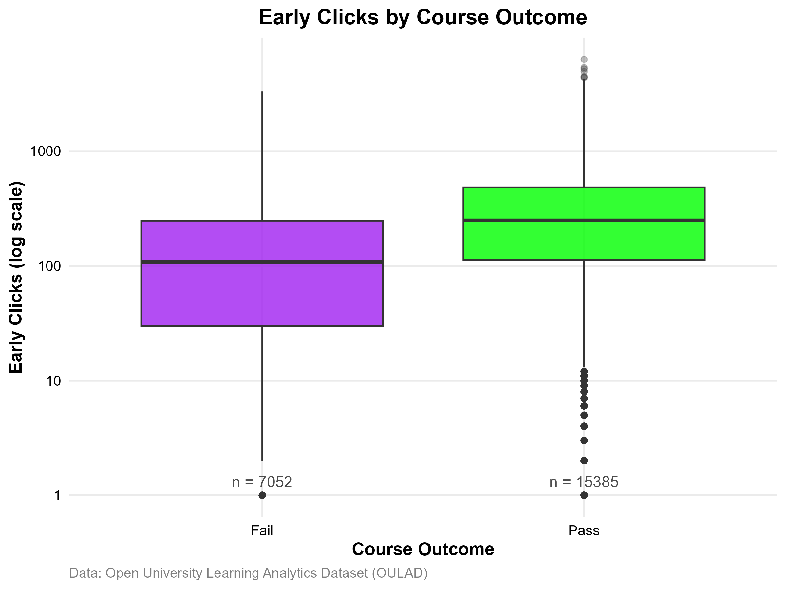
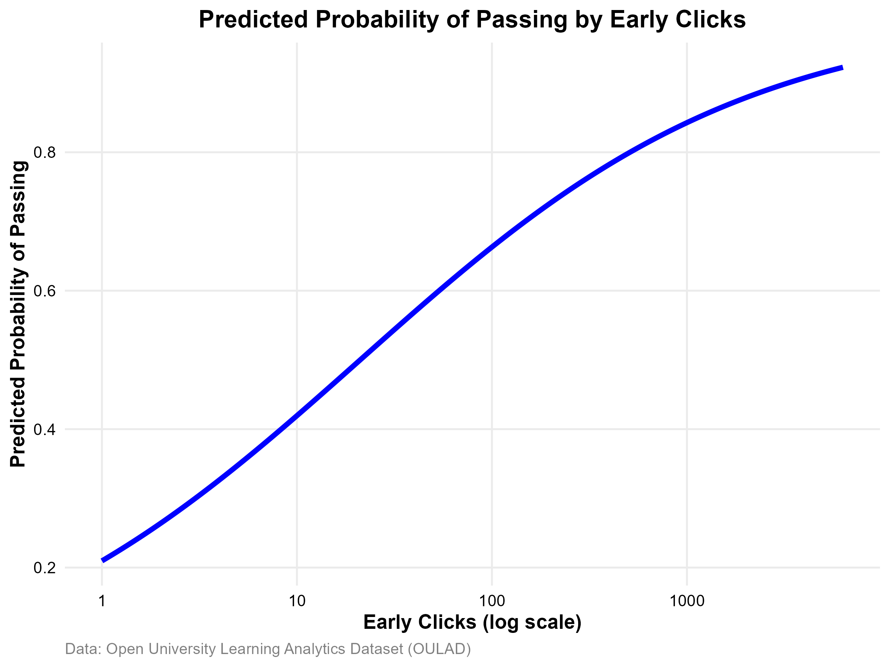
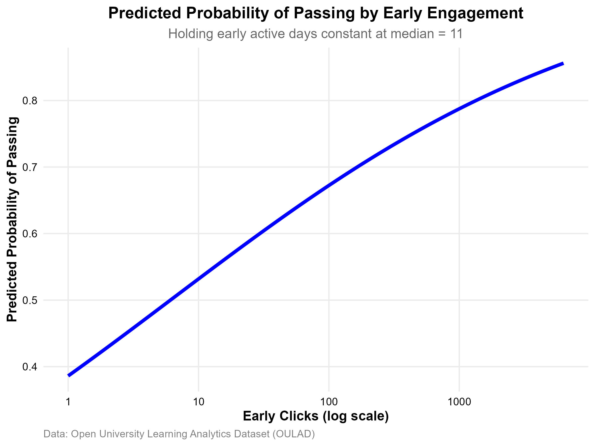
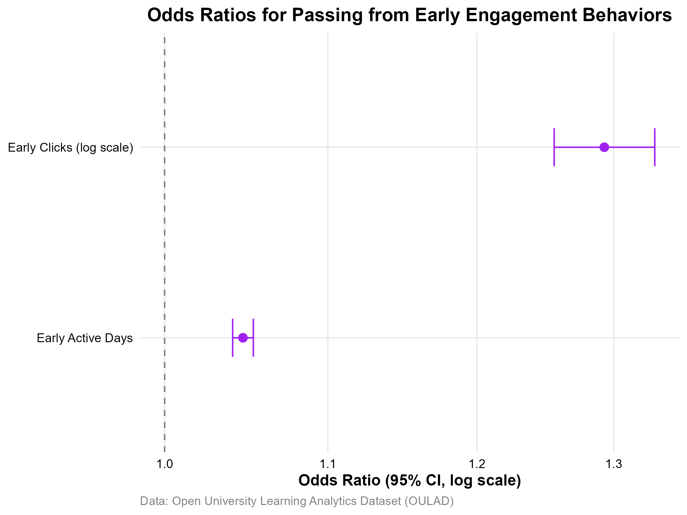
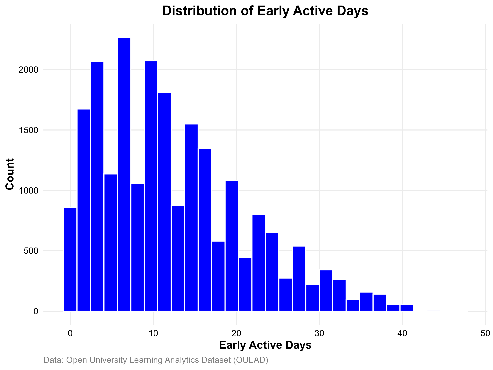
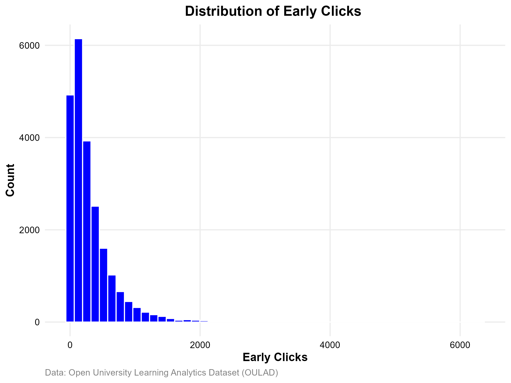

Project Overview
This project analyzed 22,437 student records from the Open University Learning Analytics
Dataset (OULAD) to investigate whether early engagement behaviors can predict academic success.
Using logistic regression, I examined how early clicks and early active learning days
influence the probability of passing a course. The project demonstrates the use of
educational data mining and predictive analytics to identify student success indicators.
Research Question
Can early engagement behaviors predict whether a student will successfully pass a course?
Methods
- Data Cleaning and Preparation
- Exploratory Data Analysis
- Feature Engineering
- Logistic Regression Modeling
- Odds Ratio Analysis
- Predictive Probability Visualization
Tools Used
R, ggplot2, Statistical Learning, Data Visualization
Key Visualizations
Early Active Days by Course Outcome

Early Clicks by Course Outcome

Predicted Probability of Passing by Early Clicks

Predicted Probability of Passing by Early Engagement

Odds Ratios for Passing

Distribution of Early Active Days

Distribution of Early Clicks

Key Findings
- Students who passed showed higher early engagement than students who failed.
- Both early clicks and active learning days were significant predictors of success.
- The probability of passing increased substantially as engagement increased.
- Early learning behavior can provide useful indicators for student support interventions.